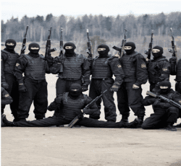

< < < Back
Why Stretching Is Essential For The Body (With 6 Beginner Stretches To Get You Started) – Return Of Kings
Flexibility is an issue that many embryonic physical culturists ignore until it is too late, when injuries or athletic mediocrity have already occurred: stretching, mobility and flexibility may be of a secondary importance to the physical man, but it is still a goal worth pursuing.
Why Stretch?
Some of you might be groaning already, saying that this is predominantly a “woman’s goal” of fitness, citing the always-prevalent female desire to “tone” and “lengthen” muscles without adding bulk. And while stretching certainly accomplishes these things, there are many benefits specifically for the masculine man, such as:
1. Improved Posture
Much fun is made in these circles of “hunched over beta males” with sloping shoulders, a high degree of swayback, and other effeminate body language. A variety of stretches for the chest, shoulders, hip flexors, hamstrings, and glutes (several of which will be discussed later in this post) can have you standing like the tall, confident alpha male you’ve always wanted to be.
2. Increased Athletic Ability
Having contracted, atrophied muscles leads to the posture issues detailed in the previous number, and muscular atrophy comes from disuse. That same atrophy leads to decreased physical aptitude. And if you don’t believe me, I’d like to see you try to deadlift, sprint, or jump with lower back pain caused by hyperlordosis, which is in turn caused by atrophied hip flexor muscles. After you try and fail at that, do a bench press or throw a punch with proper form due to your sloped, inward-facing shoulders. And finally, try to throw a high roundhouse kick so we can all laugh at you.
3. Increased Mental Fortitude And Tolerance To Pain

A stretch properly done is a slow, gradual, arduous process. This is to avoid over-stretching and injuring the muscle in question, but also as a strictly mental, almost meditative exercise. The goal of fortitude is what has traditionally made kung fu schools force their students to perform the horse stance (ma bu in the original Mandarin) for several minutes at a time, although the horse stance is not strictly a stretch. Similarly, the Russian spetsnaz forces their recruits to learn how to do splits (both the front split and the “wishbone” side split) for the exact same reason. Simply put, if you’ve gritted, gnashed, and sweated through a wishbone split, you won’t fear much in the way of pain.
4. Increased Sex Appeal
This is mostly a byproduct of the previous three steps. Speaking personally from experience and observation, women are certainly not adverse to seeing a muscled, masculine man perform a full bridge or a split. If you can pull off some of those moves on the dance floor, even better.
Stretching is a field of training that requires just as much progressive training as weights or calisthenics. The trainee should begin with the basic stretches that you probably remember from elementary school, before moving onto intermediate stretches (bridges, twist holds, etc.) and the advanced stretches (splits, scorpion holds, and other movements that seem unreal to the uninitiated). This article will only go over basic stretches to increase mobility in preparation for the intermediate stretches, but first…
Commonalities For All Stretches
Without going into too much anatomical detail, let me just say that a properly done stretch applies the pull to the muscles rather than a tendon or ligament. Muscles evolved to move, pull, contract, agonize, and antagonize. Ligaments attach bone to bone and tendons attach bone to skeletal muscle, both of which are tough connective tissues that evolved to basically keep things in place. They are made of collagen, which is meant to withstand and “hold fast” in response to tension, not stretch and move in the direction of the tension.
Stretching, thus, essentially, conditions the muscle fibers to their maximum plasticity and elasticity (for those who don’t remember physics class, plasticity is the capability of being stretched, elasticity is the capability of returning to the original length once the pressure is taken off). If you feel any pain in places you know joint tissue exists such as the hip sockets, the spine, the groin, the ankles), you’re doing it wrong. Try again with proper form.
Related to the above, there is nothing between your two legs. A lot of people will tell you that there’s some sort of ligament or muscle between the two legs keeping you from doing splits. That’s a lie. The reason splits, or any stretch, are difficult, is because your muscles are reflexively resisting the stretch, and this is normal. Much of flexibility training is gradually training your body to not use that reflex.
Stretching is a workout all its own. We’ve all seen that tubby guy at the gym doing gimpy stretches that accomplish nothing at the gym. Don’t be that guy. Personally, I do my stretching after martial arts practice, and not before or after heavy lifting or calisthenics (with two major exceptions I will specify). You can stretch whenever you want, but bear in mind—if you are not pouring sweat, and your heart isn’t pounding after your stretching is complete, then you’re not stretching right. Remember the third reason of why stretching is relevant to you.
The contraction reflex can be overcome, and there are many methods of doing so, ranging from “waiting out the stretch” (essentially holding a stretched position until the pain goes away, then extending, and repeat until it doesn’t work anymore), to getting into a stretched position and flexing the stretched muscles for 20-30 seconds to basically exhaust them into stopping the contraction reflex, and more. Those are the two main methods I use, and there are several variations of “forced relaxation”, AKA the contraction method, and:
Finally, breathe regularly. In my experience, holding your breath or breathing shallow leads to muscle cramping, which of course impairs your flexibility. But don’t breathe too deep either, just breathe smooth and regular.
Most of the information in this section was gleaned from the works of “The Mad Russian” Pavel Tsatsouline, a former Spetsnaz who defected to the USA in the late 1980s, and became a highly regarded fitness trainer and writer. More specifically, his book “Relax into Stretch” (Dragon Door Publications, 2001). I highly recommend it if you desire more in-depth information.
A Beginner Stretching Routine
1. The Bow Stance
This works the hip flexors, making your hips more mobile and flexible. Put one leg behind the other, as far as it can go while keeping the back foot flat on the floor. Keep the chest and back straight and vertical. Bend the front leg, go until parallel. Keep pressure on the back leg. The stretch is felt in the hip and groin, and as always the back is kept high and straight. Switch legs when done.
2. The Floor Hamstring Stretch
This is one we all remember from elementary school. Sit down on the floor, and extend your legs fully. Keep the feet together and pointed straight up, keep the chest and back high and straight, and bend at the waist, reaching your arms to your feet. I say “arms” and not “hands,” because training can enable you to reach your hands beyond your feet, as seen in the picture.

3. The Bridge
This is one of the two stretches I do after weightlifting rather than martial arts. Possibly because it’s half stretch, half calisthenic. It’s also one of the best exercises you can possibly do in general. It is ubiquitous in a variety of physical disciplines, from yoga to wrestling. It works the seldom-exercised erector spinae, tones the arms and legs, expands lung capacity, promotes circulation and, most importantly, rejuvenates and expands compressed or dislocated vertebral discs. To put it bluntly, if you’re not already bridging, get to it.
Lay down flat on the floor, put your hands on the floor behind your head, and push up simultaneously with your hands and feet. More than just getting your back off the floor, a proper bridge has four components: 1) Straight arms and legs, 2) An arch in the back, 3) The head tilted back in a relaxed position, and 4) Breathing is natural and deep.
Once this is mastered, there are more advanced bridges, culminating in falling into a bridge from a standing position. This is largely where the bridge stops being a stretch and becomes a calisthenic, a topic which I have already discussed on this website.
4. The Hang Stretch
My other post-weightlifting stretch. Hang from a pull-up bar, with arms fully extended and the breath held, then, let the breath go in one gasp, and let your body sag. You should feel the stretch in the back muscles. Helps your posture as well.

5. The Chest Stretch
Put your feet together and stand straight. Then clench the buttocks and thrust the hips forward, while keeping your back as straight as possible, lean your head back and look at the ceiling, and spread your arms out and as wide as possible (do NOT lock the elbows). This expands the chest and shoulders, reduces “droopiness” of the neck, and reduces hyperlordosis in the lumbar as well.
6. The Floor Hip Flexor Stretch
Put one foot on the ground, and one knee on the ground far behind. Then lean forward on the front leg, keeping the back and chest high and straight (I repeat, do not move your torso at all), while putting pressure on the hind leg. You should feel the stretch in the hip flexor of the hind leg. Then switch legs and repeat
In Conclusion
As mentioned before, I do various stretches after weightlifting, calisthenics, and martial arts. I perform all of the above stretches at some point in the week, as well as some more advanced ones. Some of these I use to warm up, and some of these I do afterwards. Having hopefully convinced you of the need to stretch, try these and see if they improve your athletic game. Be safe and see you next time.
Read More: 5 Pre-Workout Tips For Consistently Better Workouts